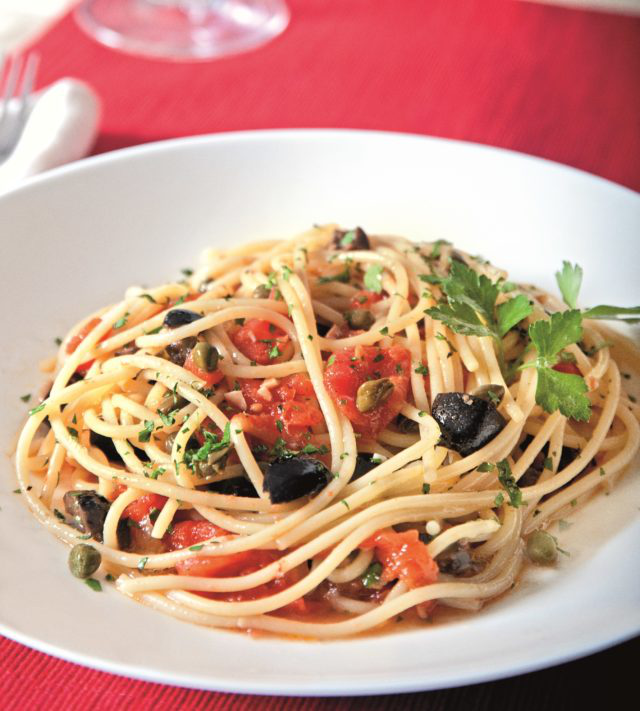

Whore Pasta

Ingredients
3
Garlic Cloves
finely chopped
6
Anchovy Fillets
finely chopped
1/2 cup
Olive Oil
1/2 cup
Black Olives
pitted and chopped
800g
Peeled Plum Tomatoes, Drained And Chopped
2 tbsp
Capers
1 tbsp
Flat-Leaf Parsley
chopped
400g
Spaghetti
Utensils
Steps
1.
25 min
Bring a large pot of salted water to a boil.
In a large skillet over medium heat sauté the garlic and anchovies in the olive oil until garlic is golden.
Add the tomatoes, olives and capers. Cook on medium heat for
15-20 minutes
, until reduced.
Cook the spaghetti until al dente (about
2 minutes
less than directions) and drain it.
Add to the tomato sauce and mix to thoroughly combine.
Serve immediately garnished with parsley.